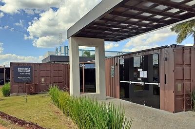

Quem Somos
As bibliotecas de Santa Bárbara d'Oeste são formadas por 3 unidades sendo elas a central (Nova Biblioteca Pública), que fica localizada no centro de Santa Bárbara e outras duas(Léo Sallum e CEU das Artes) que são localizadas em outros bairros. A biblioteca Central foi inaugurada em 15 de junho de 1968, inicialmente localizada em um prédio na Rua Santa Bárbara com apenas 2.500 livros, mais tarde foi reconstruida em outra localidade.
Desde então a prefeitura criou mais duas unidades, sendo elas distruidas em outros bairros da cidade, ao decorrer de todos esses anos as bibliotecas foram aumentando seu acervo e evoluindo,desenvolvendo projetos culturais para toda a sociedade.
Nossas localidades
Nova Biblioteca Pública
Rua Campos Sales, 72 - Vila Breda,
Santa Bárbara d'Oeste
CEP 13450-219
Tel.: (19) 3454-1605
Léo Sallum
Rua do Algodão, 1450 - Cidade Nova,
Santa Bárbara d'Oeste
CEP 13454-170
Tel.: (19) 3457-4627
CEU das Artes
Rua Argeu Egídio dos Santos, 100 -
Planalto do SOL ||,
Santa Bárbara d'Oeste
CEP 13453-842
Tel.: (19) 3458-5868
Nos siga nas redes-sociais